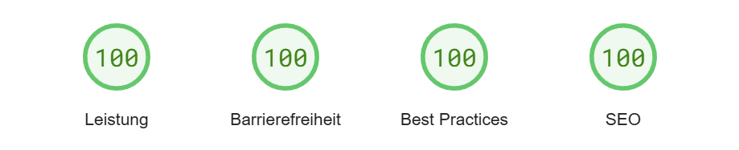

portfolio-webseite

Zeitraum
1 Semester
Prozess-Zyklus
Ideenfindung & Konzeption
Entwicklung
Feedback einholen
Tools
VS Code
GitHub
XAMPP
Überblick
Diese Webseite ist mein persönliches Projektportfolio und dient als Präsentation meiner Fähigkeiten in der Webentwicklung. Sie entstand ursprünglich im Rahmen meines Studiums und wird seitdem kontinuierlich erweitert und verbessert. Die Seite wurde mit HTML, CSS und JavaScript umgesetzt, wodurch ich ein solides Verständnis für die grundlegenden Webtechnologien erlangen konnte.
Key Features
Animiertes Cover-Bild
Bei der Landing-Page kommt ein animiertes SVG-Design zum Einsatz. Dabei ist jeder Buchstabe separat in einem path-Element definiert und mit dem "+"-Pattern gefüllt. Zuerst wird nur das Logo eingeblendet, und dann fliegen [bei einem ausreichend großem Bildschirm] leicht zeitversetzt die einzelnen Buchstabenpaare ein.
<path class="letter1" d="M 1120 490 l 80 0 l 0 -200 l -20 -20 l -157 0 l -20 20 l 0 169 l 30 30 l 68 0 l 0 -60 l -20 0 l 0 -80 l 40 0 Z" fill="url(#plus)"></path>
<path class="letter1" d="M 1180 580 l 80 0 l 0 200 l -20 20 l -157 0 l -20 -20 l -3 -200 l 80 0 l 0 140 l 40 0 Z" fill="url(#plus)"></path>
.letter1 {
opacity: 0;
animation: fade-in 3s forwards, fly-in 1s linear forwards;
animation-delay: 1.3s;
}Textbasiertes Content Management System
Um das Portfolio effizient aktuell zu halten, muss das Einpflegen neuer Projekte schnell und einfach sein. Dafür wurde ein textbasiertes CMS entwickelt: Man muss lediglich die Projektinhalte in die projectsData.js schreiben, beim Laden der Seite werden dann automatisch für jedes Projekt anhand zweier Templates das Vorschaubild und die Lightbox generiert.
const projectsData = {
"projects": [
{
"label": "portfolio-webseite",
"category": "spiel",
"featured": true,
"thumbnail": "Ressources/Portfolio_Website/Thumbnail.avif",
...Responsive Hauptbreite
Die Seite nutzt die Variable "main-width" zum Definieren der Breite von Projektgalerie, Lightbox etc. Damit diese bei jedem Gerät gleich ist, werden weder px noch rem als Einheit verwendet, da diese bei unterschiedlichen Bildschirmgrößen unterschiedlich sind. Stattdessen wird ein Prozentwert verwendet, welcher auf die jeweilige Bildschirmbreite angwendet wird.
function setInitialMainWidth() {
const screenWidth = window.screen.width;
const InitialMainWidthPercentage = parseInt(getCSSVariable('--main-width'), 10);
InitialMainWidth = (screenWidth * InitialMainWidthPercentage) / 100;
document.documentElement.style.setProperty('--main-width', `${InitialMainWidth}px`);
}Webhosting
Die Seite wurde als GitHub-Page mit einer Custom-Domain gehostet und mit dieser bei Google indexiert. Weiterhin wurde diese nach den PageSpeed-Metriken optimiert, um sowohl mobil als auch am Computer einen Score von 100/100 zu erreichen.
